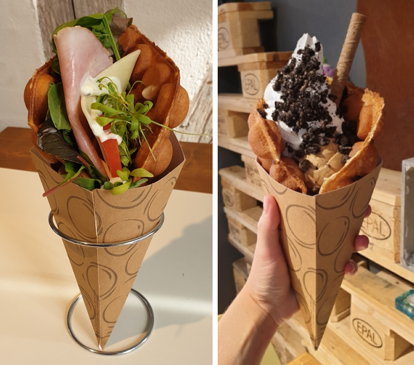
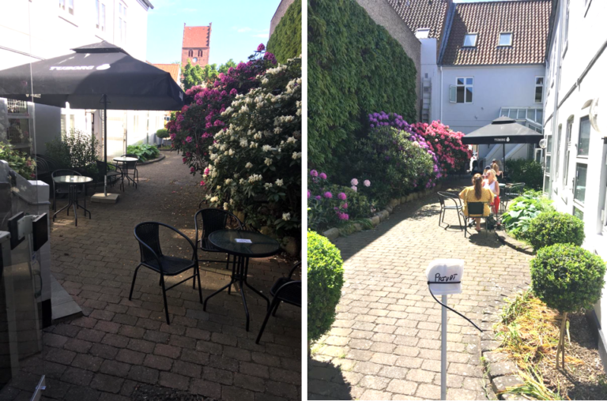
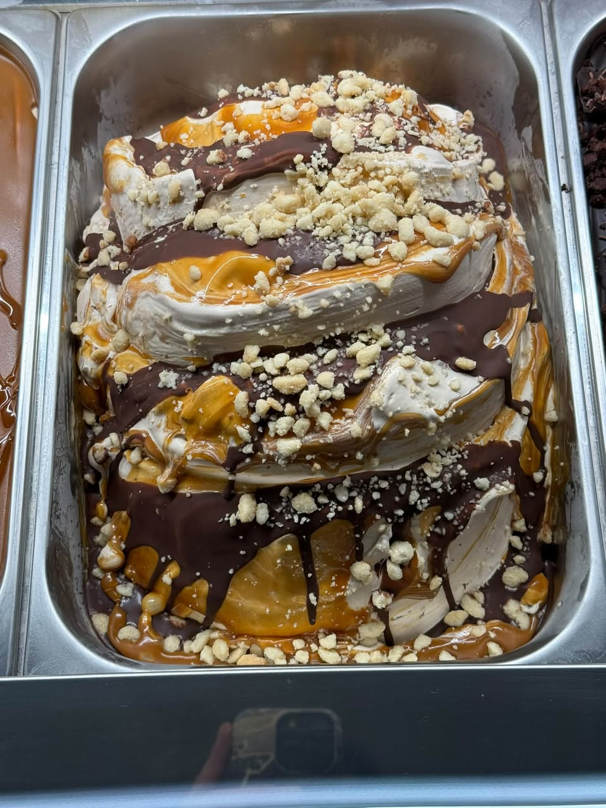
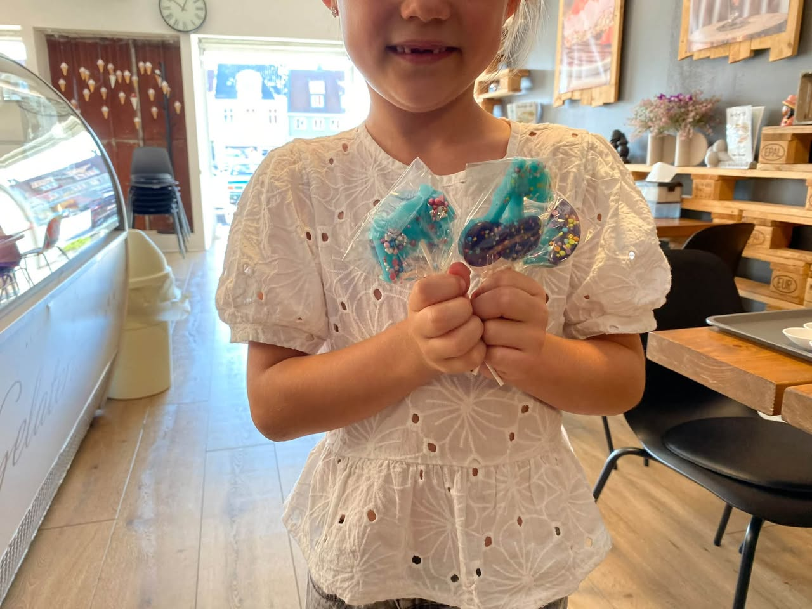

DIT SØDE HJØRNE AF KØGE
Lidt mere
at glæde
sig til.
Hjemmelavet gelato. Lune bubble waffles.
Og de små pauser, der gør dagen lidt bedre.
Meget mere end “bare” desserter.

kærlighed
SPIST MED ET SMIL
HVAD HAR DU LYST TIL?
Svært at vælge.
Nemt at nyde.

PSST … VI HAR OGSÅ EN GÅRDHAVE ♡MIDT I KØGE. LIDT VÆK FRA HVERDAGEN.
Kom for isen.
Bliv for hyggen.
En kop kaffe med en, du holder af. En vaffel, der kræver begge hænder. Eller bare en stille stund for dig selv.
Siden 2018 har vi fyldt vores lille café på Torvet med søde fristelser og plads til at være. Om sommeren venter vores grønne gårdhave bag caféen.
Find dit lille pusterumFRISK FRA CAFÉEN
Der sker altid
noget sødt.

NYT I ISDISKENUhyggeligt gode
fristelser i disken 🎃
Halloween fortsætter med blandt andet Bål & Bøh, Twix or Treat og Eddergod Pistacie.
Læs opslaget
SØDE OPLEVELSEREfterårsferie med
et sødt twist 🍭
Caféen inviterer til slikkepindeworkshop. Læs opslaget og se de aktuelle muligheder.
Læs opslagetDesignvisning med udvalgte, rigtige Facebook-opslag. Automatisk opdatering er ikke tilsluttet.
HER FINDER DU OS
Torvet 12
4600 Køge